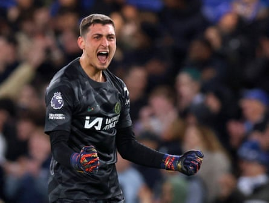

Arsenal’s hopes of one day signing Nico Williams have taken a blow after the Spain forward agreed an eight-year contract extension to stay at Athletic Bilbao until 2035.
Mikel Arteta is a long-term admirer of Williams and Arsenal’s sporting director, Andrea Berta, held talks with the player’s representatives this year over a potential move. The 22-year-old had looked set to join Barcelona until this week. Barcelona, despite the sales of Ansu Fati to Monaco and Clement Lenglet to Atlético Madrid this week, have yet to satisfy La Liga’s financial requirements to register new players.
Williams is also understood to have had interest from Bayern Munich but opted to sign a 10-year deal with his hometown club that includes a more than 50% increase in his £58m release clause. “The most important thing is to listen to your heart,” Williams said. “I am where I want to be, with my people, this is my home.”
Arsenal are expected to step up their interest in Crystal Palace’s Eberechi Eze after meeting his representatives last week and have been sounding out other potential attacking reinforcements. Real Madrid’s Rodrygo is thought to be valued at £85m and reports in Spain have indicated that the Brazilian would be allowed to leave if there is a suitable offer.
Noni Madueke of Chelsea would be a cheaper option and Arsenal are understood to have enquired about the England forward during talks over the signing of Kepa Arrizabalaga . Madueke is thought to be willing to follow the Spain goalkeeper and could be available for about £40m, although Chelsea value the 23-year-old at £50m and he has interest from other Premier League clubs. Newcastle’s Anthony Gordon is also on Arsenal’s shortlist.
Arsenal have confirmed that they have reached a mutual agreement with Takehiro Tomiyasu to end his contract. The Japan defender played only six minutes last season and is expected to be sidelined until the end of the year after a knee operation in February. The 26-year-old had another season to run on his deal.
Jonathan David is poised to join Juventus after his contract with Lille expired. The Canada forward had been linked with Tottenham and West Ham among others but arrived in Turin to complete his medical on Friday and is expected to sign a five-year deal.
Sunderland and Leeds are targeting Chelsea’s Djordje Petrovic or Lyon’s Lucas Perri as they aim to bolster their goalkeeping ranks after promotion. Talks have been held and the most likely outcome is that one will end up at each club.
Chelsea’s Djordje Petrovic is set to join either Leeds or Sunderland.Photograph: Andrew Couldridge/Action Images/Reuters
Leeds are seeking a replacement for Ilian Meslier after he was dropped in favour of Karl Darlow in the run-in after a poor run of form. Petrovic spent last season on loan at Strasbourg, helping Liam Rosenior’s side qualify for Europe. He asked to be left out of Chelsea’s Club World Cup squad.
Lyon are in a difficult position after being relegated to Ligue 2 over financial issues, pending an appeal, leaving them vulnerable to bids. The uncapped Perri, who had a loan with Crystal Palace in 2019, joined Lyon midway through last season from Botafogo and replaced Anthony Lopes as the No 1.
Sunderland are eager to recruit experienced competition for Anthony Patterson. They have turned their attention to the other goalkeepers after missing out on Marcin Bulka. The club agreed a fee with Nice for Bulka but the 25-year-old Poland international decided to join the Saudi Pro League side Neom.